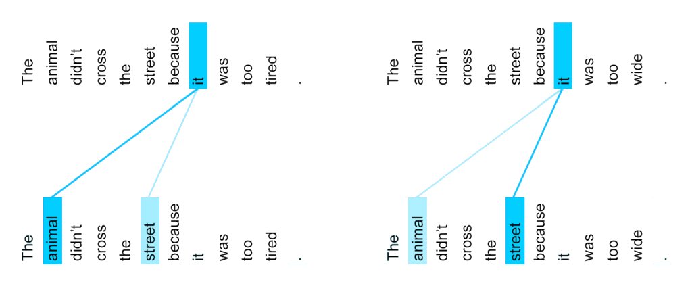

Attention, Self-Attention, & Transformers
Selected topics in Deep Learning
in 6 hours or less
by Sergey Plis
The good old attention on the input
Utility of self attention
Simpler that it sounds: project
Simpler that it sounds: compute & remix
The Transformer Architecture
Not sequential but "transformative"
All transformations have identical architecture
Decoder pays attention to encoder as well
... and re-encodes inputs
But engineering reality gets scarier
Utility of ambiguous self attention

Double up on self-attention
Helping to resolve the invariance
Dense encoding of an index

Dense encoding of an index